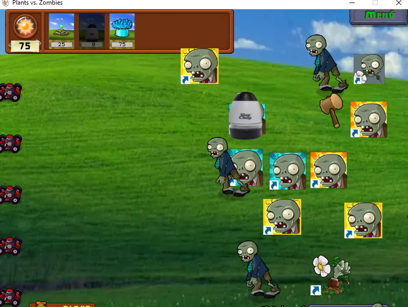

Plantas de balance dudoso
|
Bueno, en esta entrada cubriré las plantas restantes que no cubrí en anteriores entradas, con lo cual, terminaría de cubrir todos
los cambios que ye he hecho, para poder dedicarme en posteriores entradas a ir archivando los avances en orden cronológico, sin nada
más que decir, empecemos.
Empezaré con las plantas de la primera escena (a pesar de que son las últimas que edité), ya que todas han sido modificadas, principalmente porque quería pasar una build a amigos para que probaran el mod y pudieran ver cambios ya al inicio. Primero voy a mencionar un par de plantas que prácticamente ya describí, Lanzaguisantes y Repetidora, ahora son más baratos y se mantiene lo que dije en la primera entrada, aunque también estaría Hielaguisantes, con cambios similares, menor coste, mayor tiempo entre disparo, y, además, un mayor daño en los guisantes helados, lo que también beneficia a Guisante Hidra. Luego estaría una de las plantas que más me ha gustado el resultado, la Nuez; en el juego original es un muro frente a los zombis, pero también está el minijuego de la bolera, en la que lanzas nueces a los zombis, estas ruedan y rebotan tras cada zombi que golpean. Mi idea era que tras recibir cierto daño la nuez salga rodando como en el minijuego, y, gracias a un script, lo pude lograr. Además, también reduje su resistencia para compensar su nuevo factor ofensivo. |
 |
|---|
| La bolera |
|
También estarían otras como la Papapum, que ahora tarda más en prepararse, su explosión hace menos daño, pero esta tiene un área de 3x3; ahora la carnívora tarda menos en tragar zombis y puede comer zombis que están detrás de ella (vía script), ideal para los cabrones. Para terminar con el patio de día, estaría la planta que me ha causado más problemas hasta ahora, la Petacereza; en un principio no sabía qué hacer con ella, pero encontré un script muy interesante que hacía que, al explotar, lanzara proyectiles por todas direcciones, es más podrías modificar que proyectil salía a qué sitio. |
| Esto, cada proyectil hacia un sitio |
|
Era bastante guay, pero, hacía el juego muy inestable, haciendo que se congelara muchas veces, por lo que tuve que hacer cambios.
Al final logré mantener el script, pero solo haciendo que saliera una sandía congelada hacia abajo, que tampoco está mal. Además,
también aumente el tiempo que tarda en explotar lo que, a parte de también afectar a jalapeño al compartir el mismo tiempo, me hacía
sudar frío cada vez que volvía a probar la planta, pero bueno, ahora se supone que va bien.
Pasando a la noche/Windows XP, la única planta que cambié fue el Comepiedras, que quita las lápidas/accesos directos. Ahora cuesta 0, pero tarda más en destruir lápidas. Originalmente también tenía un script que ponía una escalera sobre sí mismo, haciendo que los zombis pasen sobre él sin dañarlo, pero lo quité al tener conflictos con el script de la nuez. Lo que pasaba era que el Comepiedras se quedaba estático y cuando se acercaba un zombi pasaba a ir de arriba a abajo de la columna en la que estaba, matando a zombis de las columnas cercanas haciendo el sonido que hacen al morir en la bolera. Como ese script lo puse principalmente para practicar cómo iba lo de la inyección de scripts, no tuve problemas en quitarlo. Por cierto el rediseño del Comepiedras te va a fascinar. |
|  |
| "¡Sinco segundous!" |
|
Ahora llegamos al cosmos, y con la planta esencial para el mismo, el nenúfar, que como rediseño, bueno, ¿Qué otra equivalencia se podría hacer más que la tierra plana? Estética aparte, ahora cuesta 0 soles, pero tiene una recarga muy lenta, y cuando digo muy lenta, digo más lenta que la de Marseta. Esto lo he hecho con la idea de hacer que cada casilla ocupada en el espacio sea importante y sea esencial protegerla. También estaría Pinchohierba, que ahora hace un daño fulminante, tarda mucho en atacar y cuesta el triple. Con esta también tuve que recurrir a script, ya que su daño estaba ligado no solo al de su mejora, que no sería mucho problema, si no que también al de Humoseta y Gasoseta; por lo que fue bueno encontrar un script que separaba en daño de Pinchohierba de Humoseta, aunque no de Gasoseta, pero eso es cosa para otro día. (COMENTARIO ACTUAL: actualmente la pinchohierba está rota, no en el sentido de que es buenísima, sino que crashea el juego al atacar… si un día revivo el proyecto, será de lo primero que cambie.) También tenía planeado que tras matar a cierto número de zombis, esta desapareciera, como las púas en los Bloons Tower Defense, pero, debido a mi nulo conocimiento de scripts más allá de cambiar valores, se ha quedado en una idea; por ahora. |
 |
| (Como curiosidad, el diseño de Pinchohierba viene directamente del ataque de un jefe de otro Tower Defense: The Battle Cats.) |
|
Ya estarían plantas de las zonas restantes y de la tienda; para empezar estaría la calabaza, que actuaba como defensa ante los zombis, pero que puede ser plantada sobre otras plantas, la idea original es que esta dañara a los zombis que se la mordieran, pero que a su vez dañara a la planta que "protegía". Al final solo pude hacer la primera parte, y ya es suficiente, ya que estuve días peleando con C.E; hasta que logré ver que problemas tenía con la inyección de scripts. Obviamente, caso similar a la Nuez, reduje su vida al tener ahora un punto ofensivo. Subiendo al tejado estaría el Lanzamaiz, al que aumenté la velocidad de ataque, y le reduje el daño de los granos de maíz e hice que la mantequilla paralice menos tiempo y no hiciera daño. Luego el coste fue complicado, al principio lo subí a 200, pero tras pensarlo lo dejé en 75, genuinamente no sé si ahora es una planta demasiado buena o demasiado mala, aunque tampoco busco un balance, quiero que el mod ofrezca variedad y que no sea o muy aburrido ni completamente infumable. Algo que no mencioné antes es que ahora las setas no duermen de día, esto hace algunas setas del juego original aún mejores como Petaseta o Seta Desesporada, pero ya les llegarán los cambios; sin embargo, el mayor afectado de esto sería el grano de café, planta de 75 soles que despertaba a una planta dormida. Afortunadamente, encontré un script que hace que pueda acelerar cualquier planta, aumentando el ratio de ataque o de producción de soles, así que todos contentos. En el rediseño buscaba otra sustancia que estimule y acelere el sistema nervioso, algo icónico de la cafeína, así que, bueno... Ya sabes, ¿Qué sustancia es conocida por acelerar a un organismo y es de origen vegetal? |
| :D |
|
Antes de pasar a las plantas de la tienda, estaría el Ajo, que ahora cuesta también 0, tarda más la recarga y muere como al segundo mordisco, a fin de ser algo más bien de uso instantáneo; en cuanto al diseño, se me vino a la cabeza, de camino al instituto, hacer que sea simplemente el icono de un juego conocido mundialmente como infame por su tóxica comunidad; League of Legends (LoL), también con unos retoques sonoros al sonido de asco de los zombis al morderlo. Ahora, sí que sí, en la tienda, aparte de Guisantralladora, modifiqué a Imitadora para que tarde más en transformarse en la planta imitada, y que además pueda imitar a las plantas mejora. Y por último estaría Birasol, mejora del Girasol, que da el doble de sol. Encontré en el servidor de Discord un script que hacía que una planta suelte paquetes de semillas, para plantar plantas sin ningún coste, por lo que se lo asigné al Birasol, hice que costase 700 soles y extendí su recarga. Todo iba bien hasta que, tras un tiempo mirando su entrada del almanaque, el juego se cuelga. Tras mirar qué podría ser me di cuenta de una cosa, el script no cambiaba lo que soltaba Birasol, si no que era una acción cronometrada aparte (por lo que tuve que hacer que no generase más soles), así que tras probar, me di cuenta de que tardaba lo mismo en generar un paquete en los niveles que en colgar el juego en el almanaque/Wikipedia (30 s). Desafortunadamente no he logrado solucionar el problema, probé al usar el script en el juego base y tenía el mismo error, y al preguntar en el server resultó que era un script privado de alguien que lo ganó por un concurso del server y quien lo publicó fue sin el permiso del dueño, este me permitió usarlo y me insistió en que este no tenía errores, a pesar de todo lo que le dije; por lo que, lo más seguro es que no pueda resolver este error, aunque, al ser algo rebuscado, desafié a los amigos que les pasé la beta a encontrar cómo colgar el juego. En fin, esta ha sido la entrada más larga que he escrito y, aunque no he mencionado algunos detalles de cosas que ya he hecho en el mod, las iré mencionando ya en entradas con los cambios más recientes. Para terminar, aquí están las entradas de cada planta mencionada: |
 |
 | |
|---|---|---|
 |
 | |
 |
 |
 |
 |
 | |
 |
 |
| Entrada 1 |
|---|
| Entrada 2 |
| Entrada 3 |
| Entrada 4 |
| Sección principal |